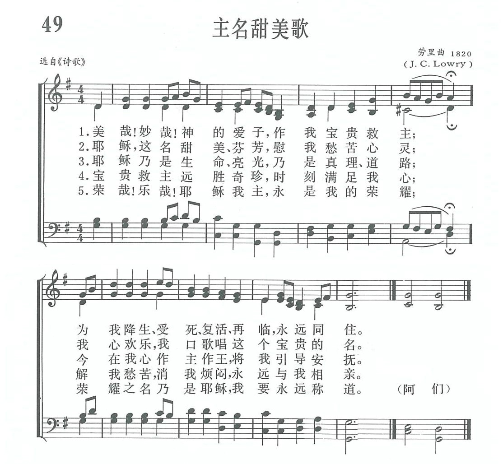
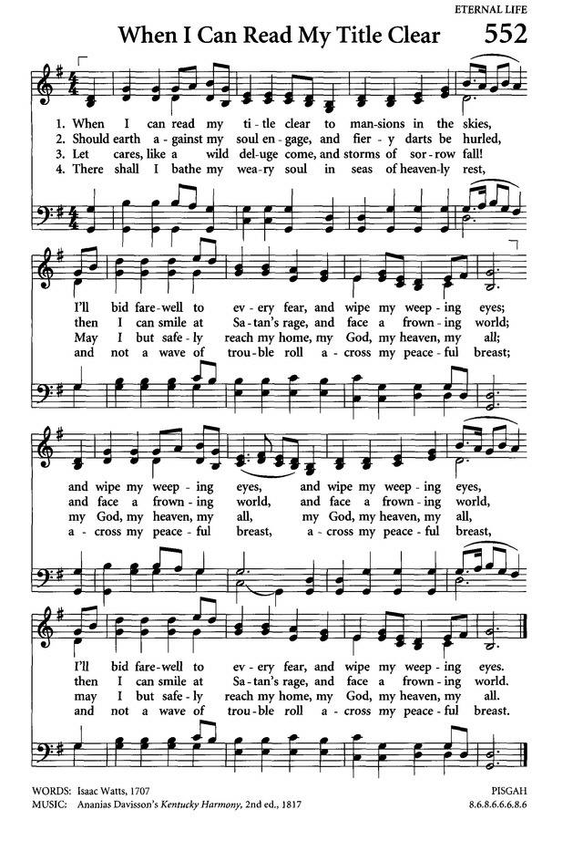
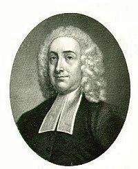
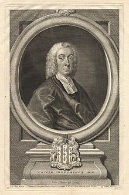

|
|
|
|
1 Jesus, I love Thy charming Name, 2 Yes, Thou art precious to my soul, 3 All my capacious powers can wish 4 Thy grace still dwells upon my heart, Amen. |
|
|
https://www.zanmeishige.com/tab/13680.html?songbook=1&index=49
 Jesus, I Love Thy Charming Name
 |
|
|
|
|


https://youtu.be/CjgdMt7H3BY
| Text: | Jesus, I Love Thy Charming Name |
| Author: | Philip Doddridge |
| Tune: | ARLINGTON |
| Composer: | Thomas A. Arne |
| Short Name: | Philip Doddridge |
| Full Name: | Doddridge, Philip, 1702-1751 |
| Birth Year: | 1702 |
| Death Year: | 1751 |
Philip Doddridge (b. London, England, 1702; d. Lisbon, Portugal, 1751)

belonged to the Non-conformist Church (not associated with the Church of England). Its members were frequently the focus of discrimination. Offered an education by a rich patron to prepare him for ordination in the Church of England, Doddridge chose instead to remain in the Non-conformist Church. For twenty years he pastored a poor parish in Northampton, where he opened an academy for training Non-conformist ministers and taught most of the subjects himself. Doddridge suffered from tuberculosis, and when Lady Huntington, one of his patrons, offered to finance a trip to Lisbon for his health, he is reputed to have said, "I can as well go to heaven from Lisbon as from Northampton." He died in Lisbon soon after his arrival. Doddridge wrote some four hundred hymn texts, generally to accompany his sermons. These hymns were published posthumously in Hymns, Founded on Various Texts in the Holy Scriptures (1755); relatively few are still sung today.
Bert Polman
Tune Information
| Title: | PISGAH (American) |
| Meter: | 8.6.8.6 |
| Incipit: | 51112 31666 53556 |
| Key: | A♭ Major |
| Source: | American Traditional; Kentucky Harmony, 1816 |
| Copyright: | Public Domain |
第49首 主名甜美歌 Jesus，I love Thy charming name _P．Doddridge
经文:“你的膏油馨香，你的名如同倒出来的香膏，所以众童女都爱你”(歌l：3).
《主名甜美歌》在《新编》线谱本左上角写着“选自《诗歌》”未注明词作者姓名。现经多方考证。这首诗乃英国独立派牧师多德里奇(P．Doddridge，1702-1751)所写。他的祖父原是英国圣公会(国教)的牧师，因倾向于独立，不愿受国教的约束，竟被革除圣职；他的父亲也就随着脱离了国教。他的母亲原是从欧洲避难来英国的清教徒<见第24首注②)，这就使多氏从小就有独立、改革、创新的思想。
青年的多德里奇因家境贫寒，无力上大学，有人愿意出资，帮助他入牛津大学，但以毕业后必须在国教内当牧师为条件，被他拒绝了，乃自己半工半读，在非国办的学校毕业。多德里奇担任独立宗牧师后，突出地表现他独立自主、自办教会的精神。他主张自办神学，培训人才，提倡艰苦奋斗，自学成才；他要求同学们自己努力，严格要求自己，使独立宗的教牧人员，文化和神学水平、宗教修养等方面，超过条件优越的国立名牌大学和国教神学院。他的这种努力，不但对英国高等教育的发展作出了贡献，并使独立宗教会在美国也得到了稳固建立。他鼓励并训练年青的教牧人员到农村去从事布道工作，并全力促进非国教的牧师、信徒联合起来，办好平民的教会。
由于多德里奇一生好学不倦，终使他成为一名多产作家。除圣诗外，他还编过一部圣经注释和《心灵宗教的兴起与发展》一书。他胸襟宽大，思想进步，善于与其他教派的同工同道合作共事。一生创作圣诗约4O0首，都是在他去世后于1755年出版，广泛地被各教派的圣诗集所选用。
多德里奇常以所写的诗歌作为讲道的结束。1727年10月23日，当他以彼得前书第2章第7节“他在你们信的人就为宝贵”为题向会众讲道，末了就以这首诗作为结束词。多德里奇那天的讲道早已被人忘怀，而他这首为结束讲道的圣诗却不胫而走，被信徒广泛传诵不绝，因此目前已有多种大同小异的首句，如：
信众至宝之主耶稣，
耶稣!我爱你的圣名；
耶稣你的拯救之名。
相传这首诗的曲作者是约瑟．劳里(J．C．Lowry) ①他的生平不详，只知道他是一位教员，曾改编19世纪美国南方典型的五声音阶民歌。所以有人认为这首曲调原是美国南方的民歌。
①《新编》内有两位劳里。请参阅作者索引。
https://www.xueshengshi.com/?p=5832
陶德瑞（Philip Doddridge，1702－1751）[編輯]
陶德瑞（Philip Doddridge，1702年6月26日－1751年10月26日）是18世紀英國非國教徒領袖和聖詩作者。
早年[編輯]
陶德瑞出生於英國倫敦。他的父親丹尼爾·多德里奇是一位商人，而據認為對他產生了巨大影響的母親，是約翰·鮑曼牧師的孤女，鮑曼牧師是一位路德會牧師，因為逃避宗教迫害從布拉格來到英格蘭，在英格蘭，鮑曼牧師一度擔任泰晤河畔金斯頓文法學校的校長。在陶德瑞能夠讀書之前，他的母親就開始教他舊約和新約
陶德瑞最初就讀於倫敦的一所小學校，在1712年，進入他外祖父擔任校長的泰晤河畔金斯頓文法學校。大約1715年，他轉入聖奧爾本斯的另一所私立學校，在那裡他深受長老會牧師塞繆爾克拉克的影響（另有一位聖公會牧師和哲學家與他同名）。
在宗教領域的貢獻[編輯]
陶德瑞具有獨立的宗教傾向，拒絕進入培養聖公會牧師的學校，在1719年選擇進入非國教徒的萊斯特郡的一所自由學院，接受約翰詹寧斯牧師的教導，1723年畢業。
當年晚些時候，在非國教徒牧師大會上，陶德瑞被選擇開辦新成立的Market Harborough學院。同年受邀出任北安普敦一個獨立教會的牧師
陶德瑞是一位多產的作家。他的《屬靈生命在魂中的興起與長進》（The Rise and Progress of Religion in the Soul）被翻譯為7種語言。司布真將《屬靈生命在魂中的興起與長進》稱為「那本神聖的書」[1]。廢奴主義者威廉·威爾伯福斯閱讀此書後，成為一名福音派基督徒。 除了一本新約注釋和其他神學作品外，多德里奇還寫了400多首讚美詩。其中大多數讚美詩是他布道的摘要，幫助信徒表達他們對所接受真理的回應[2]。
去世和遺產[編輯]
1751年，陶德瑞的身體崩潰了，這一年9月30日，他前往里斯本；但是這一努力是徒勞的，他在那裡去世了。
陶德瑞致力於一個統一的非國教徒的機構，將產生廣泛的吸引力。他具有高度的文化修養，但並沒有疏遠那些教育程度較低者。
他最著名的作品《屬靈生命在魂中的興起與長進》（1745年）
他的許多聖詩，如《於伯特利出現的神》（O God of Bethel, by whose hand），至今仍在英語世界使用。
參考資料[編輯]
https://zh.wikipedia.org/zh-tw/%E9%99%B6%E5%BE%B7%E7%91%9E
Philip Doddridge
|
Philip Doddridge
|
|
|---|---|
|
 |
|
| Born |
26 June 1702 London |
| Died |
26 October 1751 (aged 49) Lisbon |
| Education | Doctor of Divinity |
| Occupation | Writer, university teacher |
Philip Doddridge D.D. (26 June 1702 – 26 October 1751) was an English Nonconformist (specifically, Congregationalist) minister, educator, and hymnwriter.[1]
Early life[edit]
Philip Doddridge was born in London[1] the last of the twenty children of Daniel Doddridge (d 1715), a dealer in oils and pickles.[2] His father was a son of John Doddridge (1621–1689), rector of Shepperton, Middlesex, who was ejected from his living following the Act of Uniformity of 1662 and became a Nonconformist minister, and a great-nephew of the judge and MP Sir John Doddridge (1555–1628).[2] Philip's mother, Elizabeth,[3] considered to have been the greater influence on him, was the orphan daughter of the Rev John Bauman (d. 1675),[4] a Lutheran clergyman who had fled from Prague to escape religious persecution, during the unsettled period following the flight of the Elector Palatine. In England, the Rev John Bauman (sometimes written Bowerman) was appointed master of the grammar school at Kingston upon Thames.
Before Philip could read, his mother began to teach him the history of the Old and New Testament from blue Dutch chimney-tiles on the chimney place of their sitting room.[1] In his youth, Philip Doddridge was educated first by a tutor employed by his parent then boarded at a private school in London. In 1712, he then attended the grammar school at Kingston-upon-Thames,[1] where his maternal grandfather had been master. The school's master when Doddridge attended, was Rev Daniel Mayo (1672-1733), the son of John Bauman's friend Richard Mayo, ejected vicar of Kingston-upon-Thames.[5]
His mother died on 12 April 1711, when he was eight years old. Four years later his father died, on 17 July 1715.[1] He then had a guardian named Downes who moved him to another private school at St Albans, where he was much influenced by the Presbyterian minister Samuel Clarke of St Albans.[1] Downes squandered Doddridge's inheritance, leaving the orphaned 13-year-old Philip Doddridge destitute in St Albans. Here, Clarke took him on, treating him as a son, guiding his education and encouraging his call to the ministry; they remained lifelong friends. Doddridge preached at the funeral of his older friend, remarking: "To him under God I owe even myself and all my opportunities of public usefulness in the church."[6]
Marriage[edit]
On 22 December 1730 he married Mercy Maris[7] (1709–1790), daughter of Richard Maris, a baker and maltster of Worcester, and his second wife, Elizabeth Brindley.[2] The marriage was at Upton upon Severn where Mercy's family lived. They had nine children. The first, Elizabeth or Tetsey (1731–1736), died just before her fifth birthday and was buried under the platform of the Doddridge Chapel, Northampton. Four children survived to adulthood.[2]
Contribution to education and religious life[edit]
With independent religious leanings, Doddridge declined offers which would have led him into the Anglican ministry or a career in law; and in 1719, with Clarke's support, chose instead to enter the Dissenting academy at Kibworth in Leicestershire. Here Doddridge was taught by John Jennings, whom he briefly succeeded in 1723. Later that year, at a general meeting of Nonconformist ministers, Doddridge was chosen to conduct the academy being newly established a few miles away at Market Harborough. It moved many times, and was known as Northampton Academy. After his death in 1751, the academy continued;[8] it is probably best known as Daventry Academy.
In 1729 he received[1] an invitation to be pastor to an independent congregation at Northampton, which he also accepted. Here his popularity as a preacher is said to have been chiefly due to his "high susceptibility, joined with physical advantages and perfect sincerity". His sermons were mostly practical in character, and his aim was to cultivate in his hearers a spiritual and devotional frame of mind.
Throughout the 1730s and 1740s Doddridge continued his academic and pastoral work, and developed close relations with numerous early religious revivalists and independents, through extensive visits and correspondence. Through this approach he helped establish and maintain a circle of influential independent religious thinkers and writers, including Dr Isaac Watts. He also became a prolific author and hymnwriter. In 1736 both the universities at Aberdeen gave him the degree of Doctor of Divinity. However, these multifarious labours led to so many engagements and bulky correspondence as to interfere seriously both with his preaching and academic duties (he had some 200 students to whom he lectured on philosophy and theology, in the mathematical or Spinozistic style).
His The Rise and Progress of Religion in the Soul was translated into seven languages. Charles Spurgeon referred to The Rise and Progress as "that holy book".[9] Besides a New Testament commentary and other theological works, Doddridge also wrote over 400 hymns. Most of the hymns were written as summaries of his sermons and were to help the congregation express their response to the truths they were being taught.[10]
Doddridge's Youth's Scheme[edit]
Concerned at the small number of students attending the Dissenting Academies, in 1750 Doddridge initiated a Youth's Scheme, to provide capable boys from poor families with a grammar school education that would enable them to undertake further study at a Dissenting academy. Doddridge used this subscription-funded Youth's Scheme to attach a preparatory school to Northampton Academy, initially with six students.[citation needed]
Samuel Smith had been recommended and was supported by Doddridge's friend Robert Cruttenden. Doddridge now had thirty 'pupils' in his Academy, and six 'students' in his school. Initially, the senior students at the Academy were responsible for teaching the students, but had he lived, it was his intention to employ a third tutor, alongside himself and Samuel Clark.[11] The Youth's Scheme did not survive Doddridge's death.
Death and legacy[edit]
_ML.FOT.3749.46.png)
{kind=link}
{kind=link}
{kind=link}
.jpg){kind=link}
{kind=link}
In 1751, Doddridge's health, which had never been good, broke down. He sailed for Lisbon on 30 September of that year; the change was unavailing, and he died there of tuberculosis.[1] He was buried in the British Cemetery in Lisbon, where his grave and tomb may still be seen.[1]
Doddridge worked towards a united Nonconformist body that would have wide appeal, retaining highly cultured elements without alienating those less educated. His best known work, The Rise and Progress of Religion in the Soul (1745), dedicated to Isaac Watts, was often reprinted and became widely influential. It was through reading it, together with Isaac Milner, that William Wilberforce began the spiritual journey which eventually led to his conversion. It is said that this work best illustrates Doddridge's religious genius, and it has been widely translated. His other well-known works include: The Family Expositor (6 vols., 1739–1756); Life of Colonel Gardiner (1747); and a Course of Lectures on Pneumatology, Ethics and Divinity (1763). Doddridge also published several courses of sermons on particular topics.
John Wesley stated, in the Preface to his Notes on the New Testament, that he was indebted to 'the Family Expositor of the late pious and learned Dr. Doddridge' for some 'useful observations'.[12]
Many of Doddridge's hymns, such as "O God of Bethel, by whose hand", continue to be used to this day across the English-speaking world. "O God of Bethel" appears as № 497 in The Hymnal 1940, and № 709 in The Hymnal 1982 of the Episcopal Church, and as № 269 in the Presbyterian Hymnal (1990). "How Gentle God's Commands" appears as № 69 in the Methodist Hymnal (1939), № 53 in the Methodist Hymnal (1966), and as № 681 in the Trinity Hymnal (1990).
Doddridge's academy evolved into New College, Hampstead, later known as New College London, a centre for training Congregational and then United Reformed Church ministers. (This college is not connected with Royal Holloway, University of London, also a constituent college of the University of London and briefly known as Royal Holloway and Bedford New College when those two colleges merged in the 1970s.) The library of the college, which held a large collection of his manuscripts, was transferred to Dr Williams's Library in 1976.
Doddridge United Reformed Church[edit]
The Doddridge United Reformed Church (formerly the Castle Hill URC) in Doddridge Street, Northampton, was formerly Congregational, Doddridge and Commercial Street URC. It was the scene of the ministry of Doddridge from 1729 to 1751. The church was founded in 1662, built in 1695 and enlarged in 1842. It united with Commercial Street church in 1959 and became a United Reformed Church in 1972. The interior has galleries and box pews and a memorial to Doddridge.[13] The building was Grade II listed by English Heritage in 1952.[14]
Works[edit]
- The Rise and Progress of Religion in the Soul (1745)
- The Family Expositor (6 vols., 1739–1756)
- Life of Colonel Gardiner (1747)
- Course of Lectures on Pneumatology, Ethics and Divinity (1763)
Hymns[edit]
- Hark the glad sound! the Saviour comes (based on Luke 4:18-19)
- O God of Bethel, by whose hand
See also[edit]
https://en.wikipedia.org/wiki/Philip_Doddridge
Philip Doddridge hymnologyarchive
26 June 1702—26 October 1751
Philip Doddridge, engraved by T. Halpin, based on the painting by Andrea Soldi (18th century), in Edwin Long, Illustrated History of Hymns and Their Authors (1875).
PHILIP DODDRIDGE was born in London in June 1702. At his birth he showed so little sign of life that he was laid aside as dead, but one of the attendants, thinking she perceived some motion or breath, took that necessary care of him which was the means of preserving his life. His father died in 1715, about which time Philip was removed to a private school at St. Alban’s. The person who had the management of his late father’s affairs acted so imprudently as to waste all the property, and had it not been for a Mr. Clark, dissenting minister at St. Alban’s, who stood as a father to him, Philip must have been thrown into want.
In 1718 he left the school at St. Alban’s, when he had an offer from the Duchess of Bedford that, if he would go to one of the Universities, and be educated as a minister for the Church of England, she would defray the expense of his education, and if she should live until he had taken orders, would provide for him in the church. This, however, he declined, as he could not satisfy his conscience so as to comply with the forms of the church. Mr. Clark then took him under his care, and a way was thus opened for him to enter into the ministry.
After having been some time under Mr. Jennings, who kept an academy at Kibworth, and subsequently at Hinckley, Doddridge entered on the ministry in 1722. He preached his first sermon at Hinckley from 1 Cor. xvi. 22. The following year he settled at Kibworth. In 1729 he removed to Northampton, succeeding a minister named Tingey. His learning is said to have been very great. “Though others might exceed him in their acquaintance with antiquity or their skill in the languages, yet, in the extent of his learning, and the variety of useful, important knowledge he had acquired, he was surpassed by very few.” I am bound to confess, however, that so far as his life has been given by his biographer, Mr. Job Orton, I can trace very little of that learning which can be alone imparted by the Holy Spirit. Nearly the whole book is taken up with his exemplary piety, his covenants with God, his zeal, his resolves, his doing good, [etc.]
When allowed by Orton to speak in his own words we find more life. To a friend he writes, “I have great need of using the publican’s prayer, ‘God be merciful to me a sinner,’ to me an unprofitable servant, who have deserved long since to have been cast out of his family. You talk of my strength and usefulness. Alas! I am weak and unstable as water. My frequent deadness and coldness in religion sometimes press me down to the dust; and, methinks, it is best when it does so.” He was once conversing on the way in which Christians often died, when he said I wish that my last words may be these:
A guilty, weak, and helpless worm,
On thy kind arms I fall;
Be thou my strength and righteousness,
My Jesus and my all.
In Dec. 1750, he went to St. Alban’s to preach the funeral sermon of his old friend and benefactor, Dr. Clark. In that journey he contracted a cold, which did not leave him throughout the winter. In the spring of 1751, it considerably abated, but returning again with great violence in the summer, he had to give up preaching, and removed to Bristol, to try the waters there; but his health was evidently rapidly declining. When his friends reminded him of his fidelity, diligence, and zeal in his Master’s service, he used to reply, “I am nothing; all is to be ascribed to the free grace of God.” In Sept. he left Bristol for Lisbon, where he arrived on the 13th of October, and on the 26th (old style) breathed his last. On his body being opened, his lungs were found in so ulcerated a state that it appeared wonderful to the doctor that he had been able to speak so long. It was, I think, a cruel thing to send him from England under such circumstances. When a consumptive person’s friends are favored with wisdom to remove him or her, in the early stages of the disease, to a more congenial climate, it often, with God’s blessing, tends to the checking of the malady; but as a physician in Malta once said to me, it is unpardonable in the doctor to keep their patients in England until their lungs are all but gone, and then to send them abroad to die. Doddridge’s body was interred in the burying-ground belonging to the British factory at Lisbon.
by John Gadsby
Memoirs of the Principal
Hymn-Writers & Compilers of the 17th, 18th & 19th Centuries (1870)
Featured Hymns:
https://www.hymnologyarchive.com/philip-doddridge
(如果你看不到媒體播放器, 請直接點擊歌名)
前有一日，我意立定，靠託救主救我靈魂；
那時心中，實在高興，四方週圍，揚開主恩。
救主愛我，無盡無窮，我要全心，尊敬主名；
但願歸服，聽主慈聲，一生這樣，充滿聖靈。
救贖大恩，今已完成，主為我主，我為主民；
無數罪愆得蒙赦清，行走天路有祂指引。
如今離開世俗憂悶，救主教我出死入生；
天國榮耀，我有一分，這樣好處誰能講明！
副 歌
快樂日，快樂日，救主洗淨我眾罪孽然！
心裡清亮，極大歡喜，這日永遠不能忘記；
快樂日，快樂日，救主洗淨我眾罪孽！
每一位浸信會的信徒該都記得受浸時會眾唱的這首聖詩。 詩的作者陶德瑞（Philip
Doddridge,
在他十三歲時父母雙亡，當時有一位女公爵見他天資聰穎，擬栽培他成聖公會牧師。 十八世紀初葉，英國政綱不振，社會混亂，英國國教轄制人民靈性，因此他寧願就讀一間非國教的小神學院。 畢業後在貧民區牧會並在神學院兼理校務達廿一年之久。 陶德瑞好學不倦，經常手不釋卷，他和約翰衛斯理等都是當代屬靈的領袖。 他自幼體弱多病，最後積勞得肺疾而歿。他的詩歌在他生前並未付梓，直到他去世四年後，才由他的好友出版。
「快樂日」是根據歷代志下十五章十五節而作，原名是「與神盟約而喜樂」（Rejoicing in Our Covenant Engagements to God），原詩沒有副歌。 他的詩通常是他講章的摘要，講完道後，藉詩歌使會眾重溫他的信息。 他寫了363首詩歌，有175首是根據舊約寫的，188首是根據新約，最著名的是這一首。 英國安娜女王最愛這首聖詩，她的兒女受堅振禮時，都選唱此聖詩。
這首詩的曲調是林伯特（Edward F. Rimbault, 1816-1876）所作，副歌是引用他所作的「快樂地」（Happy Land）。 他生於倫敦，父親是音樂家，他隨父親學習，十六歲時就在教會司琴，嗣後任數大教堂管風琴師。 他是享有盛名的多產作家，編寫了許多民謠、牧歌及聖樂。
https://www.mbcsfv.org/chinese/library/hymncampanions/035.html